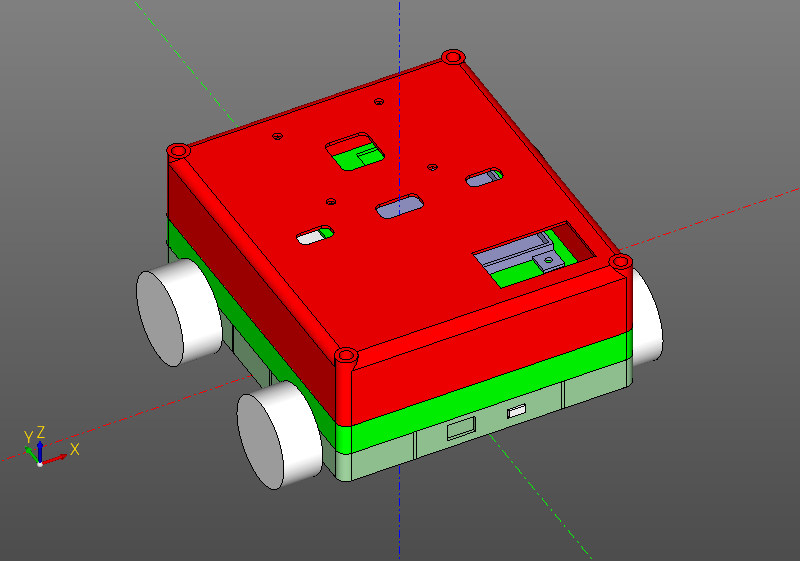

Scripted CAD systems
Scripted CAD stands apart from conventional interactive CAD. In interactive CAD, you create a model with a mouse and tools on a side or top panel. In scripted CAD, you write the program that builds it. This naturally lends itself to parameters and regular structures. Where changing basic dimensions in an interactive CAD system might require reworking the model, a script may only need a couple of constants changed.
On the other hand, scripted CAD can be less approachable. Reading a model as program code takes practice. Still, the success of OpenSCAD shows there is a need for tools of this kind.
Scripted CAD is good at machine parts and other objects with precisely defined, purposeful surfaces. Trying to model the Venus de Milo in it is unlikely to end well. There is another class of systems for artistic work.
Strictly speaking, although ZenCad's motto is "CAD system for righteous programmers", it is designed more as a library with CAD functionality than as a complete CAD system. It was built to integrate with the Python ecosystem: constructing analytical surfaces, visualizing hardware-in-the-loop simulation data, and tackling other tasks that call for Python's assorted libraries.
